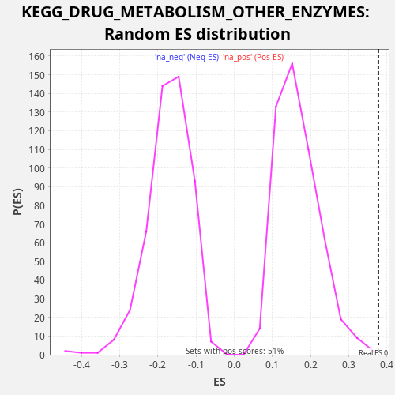

Profile of the Running ES Score & Positions of GeneSet Members on the Rank Ordered List
The same image in compressed SVG format
| Dataset | rnk |
| Phenotype | NoPhenotypeAvailable |
| Upregulated in class | na_pos |
| GeneSet | KEGG_DRUG_METABOLISM_OTHER_ENZYMES |
| Enrichment Score (ES) | 0.37759095 |
| Normalized Enrichment Score (NES) | 2.2658353 |
| Nominal p-value | 0.001980198 |
| FDR q-value | 0.0068012266 |
| FWER p-Value | 0.075 |
| SYMBOL | RANK IN GENE LIST | RANK METRIC SCORE | RUNNING ES | CORE ENRICHMENT | |
|---|---|---|---|---|---|
| 1 | TYMP | 26 | 40.120 | 0.0404 | Yes |
| 2 | IMPDH1 | 408 | 3.831 | 0.0631 | Yes |
| 3 | CES2 | 724 | 1.644 | 0.0890 | Yes |
| 4 | TPMT | 1087 | 0.869 | 0.1127 | Yes |
| 5 | UMPS | 2008 | 0.269 | 0.1085 | Yes |
| 6 | TK2 | 2190 | 0.226 | 0.1411 | Yes |
| 7 | UCK2 | 2880 | 0.124 | 0.1485 | Yes |
| 8 | TK1 | 3408 | 0.079 | 0.1639 | Yes |
| 9 | UGT1A7 | 4383 | 0.037 | 0.1570 | Yes |
| 10 | CDA | 4896 | 0.024 | 0.1732 | Yes |
| 11 | UGT1A6 | 5192 | 0.018 | 0.2001 | Yes |
| 12 | UCK1 | 5201 | 0.018 | 0.2414 | Yes |
| 13 | UGT1A1 | 5868 | 0.010 | 0.2499 | Yes |
| 14 | GUSB | 6181 | 0.008 | 0.2760 | Yes |
| 15 | UGT1A4 | 6528 | 0.005 | 0.3004 | Yes |
| 16 | GMPS | 6606 | 0.005 | 0.3383 | Yes |
| 17 | NAT1 | 6654 | 0.004 | 0.3776 | Yes |
| 18 | HPRT1 | 8325 | 0.000 | 0.3360 | No |
| 19 | UPP1 | 12243 | -0.006 | 0.1825 | No |
| 20 | ITPA | 14333 | -0.030 | 0.1201 | No |
| 21 | DPYD | 14351 | -0.030 | 0.1609 | No |
| 22 | XDH | 14433 | -0.032 | 0.1986 | No |
| 23 | IMPDH2 | 15037 | -0.046 | 0.2102 | No |
| 24 | UCKL1 | 17438 | -0.227 | 0.1323 | No |

{kind=link}
{kind=link}